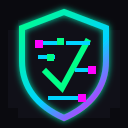

2FA setup guide
Add a second verification step to email, website, payment, and file accounts.

SecureStart Start AssessmentSmall org security console
A practical cybersecurity readiness check for clubs, nonprofits, and local teams.
> mission.load()
SecureStart helps non-technical groups find preventable risks like shared logins, missing 2FA, weak backups, unclear domain ownership, and poor recovery planning.
Answer short questions, get a score, then export a basic report your team can act on.
> collect.profile()
> scan.habits()
Pick the answer that best describes your current habits. It is fine if the answer is "not sure."
> report.compile()
Assessments stay on this device. Review prior scores or clear local history.
Each resource is written for people who do not live in cybersecurity tools.
Add a second verification step to email, website, payment, and file accounts.
List who has admin access and remove people who no longer need it.
Decide what matters, where it is stored, and how often it gets copied.
Write a one-page recovery plan before an account gets hacked.